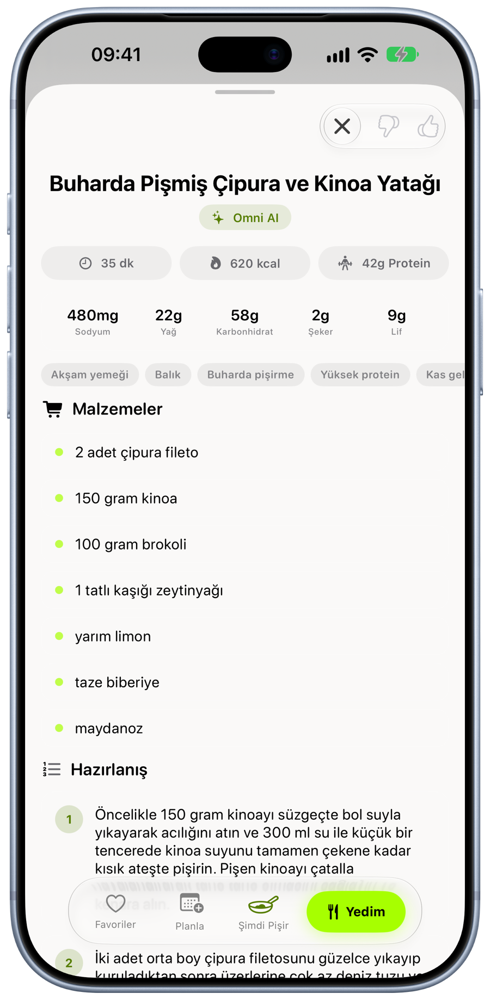

İlk açılışı kısalttık.
Başlangıç 12 sayfalık bir anketti. Gerekmeyen her soruyu çıkardık; artık iki adımda başlıyorsunuz.
Proje hikâyesi · Omni Health
Omni Health’i tasarımdan koda, çeviriden App Store’a kadar baştan sona biz yaptık. Bir uygulamaya nasıl yaklaştığımızı en iyi o anlatır.
Hikâye
Çoğu beslenme uygulaması günü halkalara, grafiklere ve yüzdelere böler. Veri oradadır ama “şimdi ne yapmalıyım?” sorusunun cevabı yoktur.
Omni gününüzü Apple Sağlık’tan okur (su, öğünler, antrenman ve uyku) ve sıradaki en anlamlı adımı tek cümleyle söyler. Bir diyetisyenin yapacağı gibi: önce dinler, sonra önerir.
Omni bugün iPhone, iPad ve Apple Watch’ta yayında. 2026 boyunca altı büyük sürümle büyüdü; her sürüm, bir öncekinde öğrendiklerimizle şekillendi.
Kararlar
Başlangıç 12 sayfalık bir anketti. Gerekmeyen her soruyu çıkardık; artık iki adımda başlıyorsunuz.
Döngü takibi, veriler düzensizken tarih tahmin etmez; hâlâ öğrendiğini açıkça söyler. Yanlış bir tarih, hiç tarih vermemekten kötüdür.
Kişisel öneriler yalnızca kullanıcı açarsa çalışır. İstekler App Attest ile korunur, kullanım adil bir haftalık kotayla sınırlanır.
Uygulamada reklam ya da üçüncü taraf analitik yok. Sağlık verileri cihazda ve Apple Sağlık’ta kalır.
Zanaat



Sizin projeniz
İlk sürüm küçük ve sağlam olur. Gerisi, gerçek kullanıcılardan öğrendiklerimizle gelir.
App Store incelemesi, ret gerekçeleri, gizlilik etiketleri, sürüm notları… Hepsini yaşadık. Uygulamanızı yayına kadar biz götürürüz.
Omni gibi sizin uygulamanız da düzenli güncellemelerle büyür. Yayından sonra da yanınızdayız.
Konuşalım
Fikrinizi birkaç cümleyle anlatın; nereden başlayabileceğimizi birlikte konuşalım.